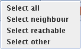

The selection menu and its content

The selection menu contains operations that are used to select different
parts of the graph. All commands except the select all requires that at least one vertex is
selected. Therefore they are disabled when no vertex is selected.
The operations in the menu are described below. The list is ordered in the same order as the menu items in the
selection menu.
- The Select all command selects all vertices in the graph.
- The Select neighbour command selects all neighbour vertices to the currently selected vertices.
- The Select reachable command selects all vertices that are reachable by only walking on the edges from the selected vertices.
- The Select other command unselects all selected vertices and selects all previously not selected vertices.